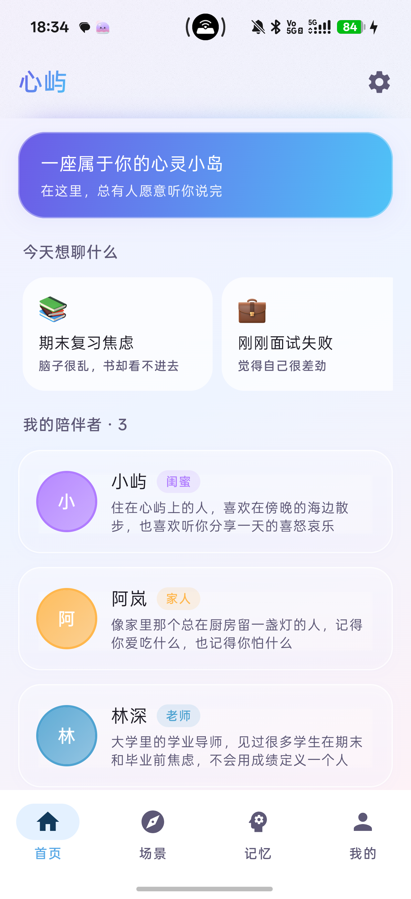

从开口到留念
按你自己的节奏聊，想停的时候就停。
从场景开始
从八个预设场景里选一个，也可以直接选角色自由聊。
选一种陪伴方式
闺蜜、老师、家人三种角色可选。记忆按角色分开，可查看、编辑或删除。
留下一张手账
从对话里留下一句话，生成情绪手账，保存到手机相册。
隐私与使用边界
账户和记忆保存在设备上。生成回复和抽取记忆时，相关对话文本会发送至所配置的模型服务。
心屿用于日常情绪支持。高风险表达会收到固定的安全提示和真人求助入口。需要专业帮助时，请联系专业人员。

按你自己的节奏聊，想停的时候就停。
从八个预设场景里选一个，也可以直接选角色自由聊。
闺蜜、老师、家人三种角色可选。记忆按角色分开，可查看、编辑或删除。
从对话里留下一句话，生成情绪手账，保存到手机相册。
账户和记忆保存在设备上。生成回复和抽取记忆时，相关对话文本会发送至所配置的模型服务。
心屿用于日常情绪支持。高风险表达会收到固定的安全提示和真人求助入口。需要专业帮助时，请联系专业人员。